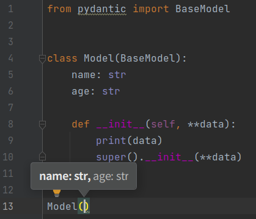

Ignore __init__ method arguments🔗
Info
This feature is in version 0.3.4 or later
You can write __init__ method on a model for adding some logic.
However, default arguments on __init__ method will be overridden, And you will lose autocompletion for __init__ methods by the plugin.

ignore-init-method-arguments option resolves this problem.
The option ignore arguments on __init__ method.

The option has to be defined in pyproject.toml
[tool.pydantic-pycharm-plugin]
ignore-init-method-arguments = true
Info
This feature is in version 0.4.9 or later
If a third-party library provides a model that extends BaseModel, it may override the __init__ method, as in __init__(self, **kwargs).
If this is the case, the plugin user should set ignore-init-method-arguments = true to ignore the __init__ method argument.
But it is difficult to tell if the library is using BaseModel or not.
The plugin ignore the __init__ method if argument is only **kwargs. the option is provided as ignore-init-method-keyword-arguments.
This option is enabled by default, so if you create a model that inherits from BaseModel with a method like __init__(self, **kwargs) defined, ignore this init argument.
If you want to disable this option, please put the following setting in pyproject.toml.
[tool.pydantic-pycharm-plugin].
ignore-init-method-keyword-arguments = true